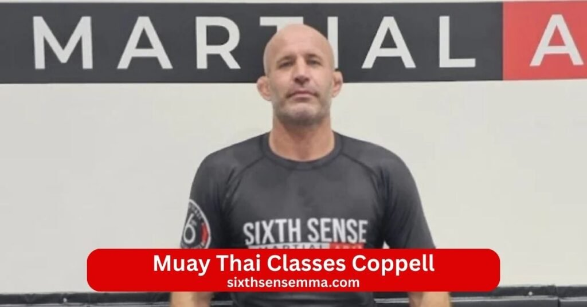
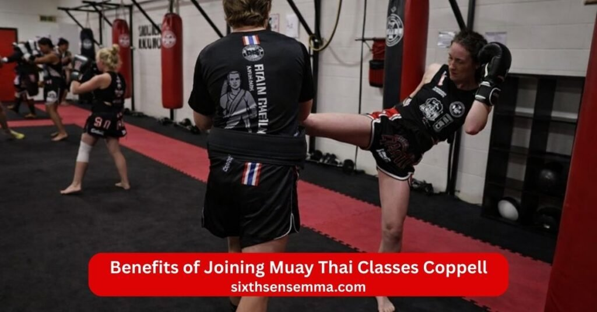
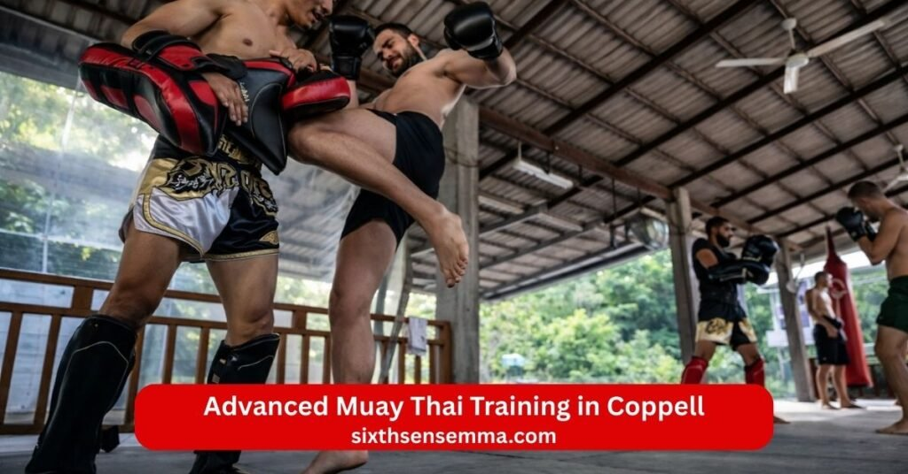

Muay Thai Classes Coppell Professional Training for All Skill Levels

Muay Thai Classes Coppell offer a powerful full body workout that builds real strength speed and confidence for adults and teens in the area. At Sixth Sense Martial Arts located right in Coppell Texas at 817 S MacArthur Blvd we run Muay Thai Classes Coppell that teach the classic sport of eight limbs with authentic punch kick knee elbow and clinch work. Beginner start from zero with simple clear steps while experienced students sharpen technique add power and prepare for sparring or competition. Our coach and instructor bring years of experience to every lesson blending traditional Thai boxing with modern training program methods so you get safe effective progress.
What You Will Learn in Our Muay Thai Classes Coppell
Our Muay Thai Classes Coppell teach real skills that work for everyday life and fitness. At Sixth Sense Martial Arts in Coppell Texas adults and teens join classes for all ages and skill levels. You train in a clean supportive gym with coach and instructor who give clear guidance. The program mixes muay thai with mma brazilian jiu jitsu bjj jiu jitsu jiu jitsu classes boxing kickboxing and wrestling so you get well rounded martial arts training. Beginners start easy while others push harder. Every session helps you build confidence discipline inner strength and the ability to defend yourself. You learn to strike with power use instinct solve problem solving moments and feel empower every time you step on the mat.
Fundamental Strikes Punches Kicks Knees and Elbows
You start with the basics of muay thai known as the sport of eight limbs. Coach teach clean punch from box style sharp kick with shin powerful knee and strong elbow strikes. You practice form footwork and balance so every hit lands right. These moves make you a better fighter and athlete. They help tone your body raise cardio and give you tools to defend in real situations. Beginners feel the rhythm fast while experienced students add speed and combos.
Pad Work and Heavy Bag Training
Pad work lets you hit real targets while instructor hold pads and call combos. You throw full power strike improve timing and feel the flow of a fight. Heavy bag sessions build strength endurance and snap in your hits. You work shin conditioning guard position and nonstop movement. This training raises your fitness martial arts fitness and workout intensity. You leave each class sweaty tired and proud because you pushed yourself with hard work.
Clinch Techniques and Close Range Control
The clinch sets muay thai apart from other martial arts. You learn to control an opponent up close grab neck sweep throw knees and stay balanced. Instructor show safe ways to off balance push pull and dominate position. This close work sharpens instinct and problem solving when someone gets inside your range. These skills make you harder to take down and give you options in tight spots.
Defensive Movements and Counter Attacks
Good defense keeps you safe so you spend time on blocks checks slips and parries. You learn to catch kick cover punch and move away from danger. Counter attacks follow right after you block or evade so you turn defense into offense fast. Coach teach how to read opponents spot openings and react smart. This part builds calm under pressure and helps you defend without panic. You gain the tools to stay one step ahead in any challenge.
Strength Conditioning and Endurance Training
Muay Thai Classes Coppell include tough conditioning to make your body ready. You do drills circuits bodyweight work and cardio bursts that raise stamina power and speed. Exercises target core legs arms and grip so you last longer in rounds or real situations. You build muscle tone and explosive strength while improving overall fitness. This training supports every strike clinch and movement. You feel stronger fitter and more capable after consistent sessions.

Benefits of Joining Muay Thai Classes Coppell
Joining Muay Thai Classes Coppell at Sixth Sense Martial Arts changes how you feel move and handle daily life. Adults and teens from Coppell Texas Valley Ranch Dallas DFW Grapevine Carrollton Irving Lewisville Plano and Fort Worth come to our gym to train in muay thai alongside mma brazilian jiu jitsu bjj jiu jitsu jiu jitsu classes boxing kickboxing and wrestling. Coach and instructor guide every session with clear instruction so you progress at your pace no matter if you are a beginner or more experienced. You use shin guard and proper gear in a clean facility to build real skill while reaching your goal. The program helps you tone your body raise cardio sharpen instinct and feel empower every day.
Improved Fitness Weight Loss and Muscle Toning
Muay Thai Classes Coppell give you intense full body workout that burns calories fast and shapes your body. You hit pads bags and air with punch kick knee and elbow which works every muscle group. High reps explosive movements and constant motion raise heart rate so you lose weight while gaining lean muscle. Legs core arms and back get stronger from repeated strike and footwork. Many people see better fitness martial arts fitness and visible toning after a few months of consistent training. You feel more energetic lighter on your feet and ready for anything because the cardio and strength gains carry over to everyday activities.
Increased Confidence and Mental Toughness
Training in muay thai builds deep confidence and mental toughness that shows up outside the gym. You push through tough rounds learn to stay calm when tired and see yourself improve week by week. Coach teach you to face challenge head on which helps you handle stress pressure or difficult moments in life. You stand taller speak with more certainty and trust your abilities because you know what your body can do. The supportive group cheers you on so you feel part of something positive. This inner strength grows with every session and helps you thrive in work school relationships and personal goal.
Practical Self Defense Skills
Muay Thai stands out for real world self defense because it uses the whole body as a weapon. You learn to strike from distance control range with kick close the gap with knee and finish with elbow or clinch work. Instructor show how to block check defend and counter so you can protect yourself if needed. The moves come naturally after practice and work against bigger opponents through smart technique not just power. You gain the ability to defend stay aware and create space quickly. Many students feel safer walking alone knowing they have tools to handle trouble without panic.
Stress Relief Through High Intensity Training
High intensity muay thai sessions melt away daily stress like nothing else. You focus completely on the next combo breath and movement so worries fade during class. Hitting pads or bags lets you release built up tension anger or frustration in a healthy way. The endorphins from hard workout leave you calm clear headed and positive afterward. Daily classes give you a regular outlet to recharge mentally and physically. People often say they sleep better think sharper and handle problems with more patience because the training clears their mind and builds discipline.
Muay Thai Classes Coppell for Beginners
Muay Thai Classes Coppell at Sixth Sense Martial Arts welcome complete beginner who want to start muay thai the right way. Located in Coppell Texas near Valley Ranch Dallas DFW Grapevine Carrollton Irving Lewisville Plano and Fort Worth our gym offers classes for all ages and skill levels with special focus on new people. Adult teens and anyone new to martial arts join daily classes to learn eight limbs strikes in a clear simple program. Coach and instructor give personal guidance so you feel comfortable from day one. No need to worry about falling behind because the training program starts slow and builds up naturally. You train in a clean facility with proper shin guard and gear while you work toward your goal of better fitness confidence and real self defense ability.
Step by Step Skill Development
In Muay Thai Classes Coppell for beginner every skill comes one step at a time. Coach teach basic stance first then add footwork balance and simple punch from box style. Next you learn kick with proper hip turn knee drives and elbow setups so your body moves as one unit. You practice each move slowly on air then pads then light partner work. Instructor break down every part show common mistakes and help you fix them right away. You progress to combos timing and flow once basics feel solid. This step by step method helps you build clean technique without bad habits. You see steady improvement week by week which keeps you motivate and excited to come back for more lesson.
No Prior Martial Arts Experience Required
You do not need any past training in muay thai mma brazilian jiu jitsu bjj jiu jitsu jiu jitsu classes kickboxing boxing wrestling or any other martial arts to start. Our program welcomes total newcomers who have never thrown a strike or stepped in a gym before. Coach explain everything from the ground up using simple words and clear demos. Everyone starts at the same beginner level so you never feel out of place. The focus stays on learning safely having fun and getting better at your own speed. Many people join after years away from exercise or with zero sport background and still succeed because the instruction fits exactly where you are now.
Supportive and Motivating Training Environment
Our Muay Thai Classes Coppell create a warm supportive space where everyone cheers each other on. Beginner feel welcomed by friendly group members and encouraging instructor who celebrate small wins like landing your first clean kick or holding stance longer. Coach motivate you through tough moments with positive words tips and patience. You train alongside people of different ages and skill levels so you see real progress in others and get inspired. The facility stays clean safe and open with good energy that makes hard workout feel enjoyable. This environment helps you push past comfort zones build discipline inner strength and confidence while making friends who share your goal. You leave each class feeling stronger mentally and physically because the group lifts you up.

Advanced Muay Thai Training in Coppell
Advanced Muay Thai Training in Coppell at Sixth Sense Martial Arts helps experienced students take their muay thai to the next level. If you already know the basics of eight limbs strikes and want more challenge this program pushes you further in a safe structured way. Adult teens and serious athlete from Coppell Texas Valley Ranch Dallas DFW Grapevine Carrollton Irving Lewisville Plano and Fort Worth join these sessions to sharpen skill refine technique and build real fight readiness. Coach and instructor with deep experience give focused guidance in our clean facility so you train harder smarter and safer. You work with shin guard proper gear and partners who match your level while you build explosive power better instinct and the mindset of a true fighter.
Controlled Sparring Sessions
Controlled sparring sessions form the heart of advanced muay thai at our gym. You put skills to the test in live rounds with clear rules light to moderate contact and constant coach oversight. Instructor call out focus areas like timing distance defense or specific strike so every round teaches something useful. You practice clinch work knee exchanges elbow counters and full combos while staying protected. Sessions stay technical not wild to avoid injury and help you read opponents better. Many students say sparring builds calm under pressure sharpens problem solving in real time and makes defend feel automatic. This controlled practice turns theory into muscle memory so you react faster and smarter in any situation.
Fight Preparation and Competition Coaching
For those aiming to compete our fight preparation and competition coaching gets you ready step by step. Coach create fight camps that include strategy sessions weight management camp conditioning and mock fights. You drill specific game plans counter common styles and work on mental prep like staying composed during chaos. Instructor break down footage from your own rounds or pro fights to spot weaknesses and strengths. We cover everything from cutting weight safely to peaking on fight day. Whether you want amateur bouts or just the discipline of training like a fighter this coaching pushes your limits while keeping safety first. Students who go this route gain huge confidence sharper instinct and the satisfaction of seeing hard work pay off in the ring.
Personalized Performance Improvement Plans
Every advanced student gets a personalized performance improvement plan tailored to their goals body type and current level. Coach assess your strike speed power defense footwork stamina and clinch game then map out exact drills fixes and progress checks. You might focus on faster kick better guard recovery stronger knee drives or smoother transitions between ranges. Plans include extra conditioning tweaks nutrition tips recovery advice and weekly check ins to track gains. This individual approach helps you build weak areas while keeping your strengths sharp. Beginner to advanced differences get respected so you improve steadily without plateaus. Many people see big jumps in fitness cardio martial arts fitness and overall performance because the plan fits them perfectly.
Class Schedule and Membership Options for Muay Thai Classes Coppell
Muay Thai Classes Coppell at Sixth Sense Martial Arts fit real life so you can train consistently without stress. Our gym in Coppell Texas offers daily classes that work around work family and other commitments for adult teens and beginner to advanced students. Coach and instructor run classes for all ages and skill levels with clear instruction in muay thai mma brazilian jiu jitsu bjj jiu jitsu jiu jitsu classes boxing kickboxing and wrestling. You build fitness confidence discipline and self defense skills while reaching your goal. We keep options simple flexible and easy to join so you start strong and stay consistent.
Flexible Class Timings for Busy Professionals
Busy professionals from Coppell Texas Valley Ranch Dallas DFW Grapevine Carrollton Irving Lewisville Plano and Fort Worth love our schedule because it bends to fit demanding days. Morning early sessions help you start the day energized evening classes let you unwind after work and weekend slots work for those who need more recovery time. Daily classes run at different hours so you pick what matches your routine best. Drop in for one session or attend multiple times a week without rigid rules. Coach make sure every lesson stays high energy and focused even in shorter windows. This flexibility means you never skip because of timing and you keep building cardio martial arts fitness toning and strike power steadily.
Affordable Membership Packages
We offer membership packages that give great value without high costs. Monthly plans include unlimited Muay Thai Classes Coppell so you attend as often as your schedule allows. Family discounts help when more than one person joins and we avoid long lock in contracts so you stay month to month with easy changes or pauses. Some packages bundle uniform gear suggestions or extra perks like priority booking. Prices stay reasonable compared to other martial arts options in the area because we focus on access not extras you do not need. You get world class instruction in a clean facility with supportive group energy at a rate that fits most budgets. Many members say the results in fitness confidence and inner strength make every payment feel worth it.
Private Muay Thai Training Sessions
Private Muay Thai Training Sessions give you one on one time with coach or instructor to speed up progress. These sessions let you fix specific weaknesses work on personal goal like faster kick better clinch stronger elbow or sharper counter attacks and get custom drills tailored to your body style and needs. Private work helps beginner learn basics quicker or advanced students prepare for sparring or competition. You set the pace ask unlimited questions and get direct feedback without waiting for group turns. Sessions fit into your schedule and add extra focus to regular classes. People use private training to overcome plateaus solve problem solving in technique or simply accelerate their empower journey in muay thai.
Free Trial Muay Thai Class in Coppell
Try Muay Thai Classes Coppell with no risk through our free trial class. Come to the gym at 817 S MacArthur Blvd step on the mat wear basic gear we provide and experience a full session. You learn fundamental strike feel the flow of pad work try light clinch and get a real taste of the workout intensity. Coach welcome you explain everything make you feel comfortable and answer all questions afterward. No pressure to sign up right then we just want you to see if muay thai clicks for you. Many people try the free trial feel the energy sweat a little and decide to join because they love how it makes them feel stronger calmer and more capable. It takes just one session to start your path.
Why Sixth Sense MMA Are the Top Choice for Muay Thai Classes Coppell
Sixth Sense MMA stands out as the best place for Muay Thai Classes Coppell because we deliver real results in a welcoming space right in the heart of the community. Located at 817 S MacArthur Blvd in Coppell Texas our gym draws adult teens and beginner from Valley Ranch Dallas DFW Grapevine Carrollton Irving Lewisville Plano and Fort Worth. Coach and instructor teach muay thai with eight limbs strikes while blending mma brazilian jiu jitsu bjj jiu jitsu jiu jitsu classes boxing kickboxing and wrestling into one strong program. Students build fitness confidence discipline inner strength and practical self defense skills in daily classes that fit classes for all ages and skill levels. Families and individuals choose us for the combination of quality instruction supportive atmosphere and clear progress that makes martial arts training feel rewarding every time.
Convenient Coppell Location
Our gym sits in a prime spot at 817 S MacArthur Blvd Coppell Texas making it easy for people across the area to reach us. Close to neighborhoods offices and schools the location means short drives plenty of parking and no long commutes that eat into your day. Busy professionals drop in after work parents bring teens without hassle and anyone from nearby cities like Dallas or Fort Worth finds it simple to attend regularly. This convenience helps students show up consistently train harder and see faster gains in cardio toning strike power and overall martial arts fitness. When the gym feels close and accessible people stick with their goal longer and get more out of every lesson.
Small Class Sizes for Individual Attention
We keep class sizes small so coach and instructor give real personal guidance to every student. You never feel lost in a crowd or wait long for feedback. Instructor watch your form correct small mistakes right away and adjust drills to match your skill levels whether you are a beginner working on basic punch kick knee and elbow or advanced working on clinch and counter attacks. Small groups allow safe partner work better sparring control and more time to ask questions. Students progress quicker because attention stays focused on them. Many say this setup makes them feel valued pushes them to improve and turns tough sessions into enjoyable challenges.
Proven Track Record of Student Success
Students at Sixth Sense MMA show clear changes that last. Beginners often start unsure but soon stand taller hit harder last longer in rounds and feel calmer in daily stress. Advanced athlete sharpen technique compete better or simply reach personal bests in power speed and endurance. Coach track progress celebrate milestones and help overcome plateaus so everyone sees results. People gain confidence mental toughness better problem solving under pressure and real self defense ability that carries outside the gym. Reviews and stories from current members highlight improved fitness discipline inner strength and the satisfaction of knowing they can defend themselves effectively. This consistent success draws new students who want the same transformation.
Positive Community and Training Culture
The training culture at Sixth Sense MMA feels warm encouraging and positive from the first day. Supportive group members cheer each other push one another and share tips without ego. Coach create an environment where hard work gets respect everyone stays motivate and people from different backgrounds connect over shared goal. You laugh sweat and grow together in a space free of judgment. This community vibe makes classes something to look forward to not just a workout. Students form friendships find mentor in instructor and build lasting habits because the atmosphere lifts everyone up. It turns Muay Thai Classes Coppell into more than training it becomes a place where you thrive feel empower and keep coming back.
Why Choose Sixth Sense MMA Muay Thai Classes Coppell
Sixth Sense MMA gives you the best Muay Thai Classes Coppell because we focus on quality teaching real skills and a space where everyone can grow. In Coppell Texas our gym at 817 S MacArthur Blvd serves adult teens and beginner from Valley Ranch Dallas DFW Grapevine Carrollton Irving Lewisville Plano and Fort Worth. Coach and instructor teach muay thai as the sport of eight limbs while mixing in mma brazilian jiu jitsu bjj jiu jitsu jiu jitsu classes boxing kickboxing and wrestling for complete martial arts training. You train in daily classes that fit classes for all ages and skill levels to build fitness confidence discipline inner strength and strong self defense. People choose us because we combine expert instruction a clean facility and real progress that makes every lesson count toward your goal.
Certified and Experienced Muay Thai Instructors
Our coach and instructor hold certifications in muay thai and bring years of hands on experience from training competing and teaching. They know the eight limbs inside out and understand how to teach punch kick knee elbow clinch and defense clearly and safely. Instructor stay updated with modern methods while keeping traditional roots so you get accurate technique every time. They give personal guidance spot small errors fix them fast and help you progress whether you want fitness self defense or fight readiness. Students feel supported because coach push with encouragement patience and real knowledge that comes from years in the sport. This level of expertise makes a big difference in how quickly and correctly you build skill.
Authentic Thai Boxing Techniques and Modern Training Methods
We teach pure muay thai with authentic Thai boxing roots including proper stance rhythm breathing and the full power of eight limbs. You learn traditional clinch sweeps throws and shin conditioning alongside modern tweaks like interval drills video analysis and sport science for better recovery and performance. Coach blend old school precision with current training program ideas to make you faster stronger and smarter. Beginner start with clean basics while advanced students refine timing strategy and explosive strike. This mix keeps training fresh effective and true to muay thai so you develop real instinct problem solving and the ability to defend or compete with confidence.
Safe Clean and Fully Equipped Training Facility in Coppell
Our facility in Coppell stays spotless safe and ready for hard work. Mats get deep cleaned daily equipment stays in top shape and the space has good air flow lighting and room to move. You use high quality shin guard pads heavy bags thai pads and other gear made for muay thai so you train without worry. Coach enforce strict safety rules controlled sparring proper warm ups and constant supervision to prevent injuries. The gym feels open welcoming and professional with viewing areas for friends or family. This clean equipped setup lets you focus fully on workout cardio toning and martial arts fitness while feeling secure every session.
Beginner Friendly and Advanced Fighter Programs
Muay Thai Classes Coppell at Sixth Sense MMA fit anyone from total beginner to advanced fighter. Newcomers learn step by step with simple explanations slow builds and lots of encouragement so basics feel easy and fun. No prior experience needed we start you where you are. Advanced students get tougher sparring fight prep strategy sessions and personalized plans to sharpen technique and push limits. Classes for all ages and skill levels mean everyone trains in the right group with partners who match energy and goals. This approach helps everyone empower themselves thrive and reach their goal at their own pace.
Contact US
If you want to learn more about Muay Thai Classes Coppell join our daily classes book a free trial or ask about membership options at Sixth Sense Martial Arts just reach out. We are happy to answer any questions help you find the right schedule or guide you on how to get started with beginner or advanced muay thai training. Our coach and team make it easy for adults and teens from Coppell Texas Valley Ranch Dallas DFW Grapevine Carrollton Irving Lewisville Plano and Fort Worth to feel comfortable taking the first step.
- 817 S MacArthur Blvd #100 Coppell TX 75019 United States
- (469) 972 7800
- info@sixthsensemma.com
Conclusion
Muay Thai Classes Coppell at Sixth Sense Martial Arts give you a complete path to become stronger fitter and more confident in every part of life. From the first free trial you step into a clean supportive gym at 817 S MacArthur Blvd Coppell Texas where coach and instructor teach authentic muay thai with eight limbs strikes clinch work and smart defense. Beginner learn step by step with clear guidance while advanced fighter sharpen technique through controlled sparring fight prep and personalized plans. You train in daily classes that fit busy schedules mix high cardio explosive workout martial arts fitness and real self defense so you tone your body raise endurance build discipline inner strength and feel empower after every session.
Follow Us on Social Media
Stay connected with Sixth Sense MMA through our social media channels. Follow us for class updates, training tips, and a closer look at our self defense community.
FAQ’s
Muay Thai lesson prices vary by location, gym type and whether it’s group or private. In the US most group classes cost between 15 and 30 dollars per drop in session. Monthly unlimited memberships usually run 100 to 220 dollars depending on the city and facility. Private one on one lessons often range from 60 to 150 dollars per hour. In smaller towns or community gyms prices sit lower around 10 to 20 dollars per class while big cities or high end spots charge more. Many places offer a free trial class first so you can try before paying. Always check local gyms for exact rates packages and any family or student discounts.
No age is really too late to start Muay Thai. People begin in their 30s, 40s 50s and even 60s and still see great gains in fitness, mobility, strength and confidence. The key is starting at a level that matches your current health and listening to your body. Older beginners focus more on technique conditioning and fun rather than hard sparring or competition. Good coaches modify drills, use lighter contact and emphasize safety so anyone can train. Many gyms welcome older students and some even have specific classes for them. If you stay consistent Muay Thai improves balance coordination and overall well being at any stage of life.
Both jiu jitsu and Muay Thai are tough but in different ways so which one feels harder depends on you. Muay Thai demands high cardio explosive power shin conditioning and the ability to take and give strikes which can feel more physically draining at first especially with constant movement and impact. Jiu jitsu (bjj) focuses on ground work leverage technique and endurance in close control which taxes mental sharpness, grip strength and patience more since rolls can last longer and require problem solving under pressure. Many find Muay Thai harder on the body early on due to bruising and fatigue while jiu jitsu feels harder on the mind because of the learning curve for positions and submissions. Most people say they complement each other well and training both makes you better overall.
Yes, training Muay Thai 3 times a week is enough for most people especially if you are consistent and train hard each session. Three solid classes let you improve technique, build cardio, gain strength and see real progress in fitness and skill without overtraining or burnout. Beginners often advance noticeably on this schedule while experienced students maintain or slowly improve. Add some home conditioning like shadowboxing running or core work on off days if you want faster results but three quality sessions per week already deliver great benefits for health self defense confidence and stress relief. Many busy adults thrive on exactly this frequency.
You can learn basic conversational Thai in 3 months if you study daily and immerse yourself but fluency takes much longer. In 3 months with focused effort you can master greetings numbers, simple sentences, directions, food orders and everyday phrases enough to get by in Thailand or chat casually. App classes, tutors and daily practice speed things up. Thai has a unique script and grammar different from English so pronunciation and reading take extra work but basics come quicker than many think. Serious learners often reach survival level in 3 months with 1 to 2 hours of study per day. Full conversational comfort or advanced topics usually need 6 months to a few years.
Choose Muay Thai if you want a more complete stand up system that includes clinch knees, elbows sweeps and full use of the body plus strong self defense roots. Choose kickboxing if you prefer cleaner punches, kicks with no clinch work and often more sport focused rules like point fighting or kickboxing styles that emphasize speed and combinations without as much close range grappling. Muay Thai feels more raw and practical for real situations while kickboxing can feel faster and more boxing like. Many people start with Muay Thai because it covers more tools then add kickboxing elements later. Try both with a free trial if possible and pick what excites you more.
In Thai slang 555 means haha or laughing out loud because the number 5 in Thai is pronounced ha. So writing 555 is like typing lol or hahaha in English. The more 5s the bigger the laugh like 55555 for really funny. You see it everywhere in Thai chats texts and social media as a quick way to show amusement. It comes from the Thai word for five ha so 555 mimics the sound of laughter.
The 15/30/15 method is a high intensity interval training structure often used in Muay Thai or kickboxing conditioning. It means 15 seconds of max effort work followed by 30 seconds of active rest or low intensity movement then another 15 seconds of max effort. You repeat this cycle for several rounds usually on pads, bag shadowboxing or circuits. It builds explosive power, cardio endurance and mental toughness by pushing hard in short bursts while recovering just enough to go again. Many coaches use it to mimic fight rounds, improve stamina and make workouts efficient.
Thai is generally harder for English speakers to learn than English is for Thai speakers but it depends on your native language and goals. Thai has five tones where wrong tone changes, meaning completely a unique script with 44 consonants and many vowel combinations plus no spaces between words in writing. Pronunciation grammar and politeness levels add complexity. English has irregular spelling pronunciation and vast vocabulary but simpler tones and alphabet. Most experts rank Thai as harder for Westerners due to tones and script while English feels more accessible because of global exposure. If you already know a tonal Asian language, Thai might feel easier. For basics Thai can be picked up fast but mastery takes longer than English for non natives.
Train with us in Coppell
The first class is free. Shorts, a t-shirt and a water bottle. We lend the rest.
Book a free class